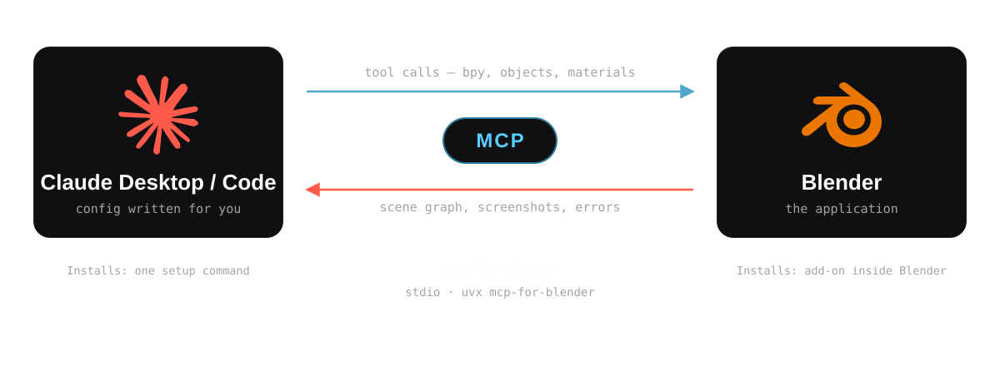

Connect Blender to Claude
The most mature of the community integrations, recently renamed from blender-mcp to mcp-for-blender. One command sets up the client config and the add-on together — and there is a safe mode worth knowing about.

Blender has the most developed community MCP integration of any application in these guides, and the easiest install — a single setup command does the client config and the add-on together.
One thing to know before you search for it: the project was renamed. The PyPI package was blender-mcp and is now mcp-for-blender. Old setups keep working — uvx blender-mcp still runs the server and no config change is required — but new installs should use mcp-for-blender.
Read What MCP actually is first if this is your first server.
Source: the project README at github.com/ahujasid/mcp-for-blender. It is a third-party integration, not made by the Blender Foundation.
What you need
- Blender 3.0 or newer. (Blender 5.3+ only for the Gaussian-splat world tools.)
- Python 3.10 or newer.
- uv — install with the official installer, not
pip install uv:
| Platform | Command | |---|---| | macOS | brew install uv | | Windows | winget install --id=astral-sh.uv -e | | Windows (alt) | powershell -ExecutionPolicy ByPass -c "irm https://astral.sh/uv/install.ps1 \| iex" |
The short route
The project's own recommendation — this finds your MCP clients, adds a blender entry while keeping your existing config (and saving a .bak), and installs and enables the add-on:
uvx mcp-for-blender setupThe README also publishes one-line installers that do the uv step too. Read any script before you pipe it to a shell — that is true here and everywhere else:
curl -LsSf https://www.mcp-for-blender.com/install.sh | shirm https://www.mcp-for-blender.com/install.ps1 | iexIf you would rather do it by hand, the long route follows.
The long route
Claude Desktop
Settings → Developer → Edit Config, then:
{
"mcpServers": {
"blender": {
"command": "uvx",
"args": ["mcp-for-blender"]
}
}
}Save and fully quit Claude Desktop — on Windows, from the system tray — then reopen it.
Claude Code
claude mcp add blender uvx mcp-for-blenderThe Blender add-on
uvx mcp-for-blender install-addonThis copies the add-on into your Blender add-ons folder as blender_mcp.py, prints where it wrote, and keeps a .bak of anything it replaced. uvx mcp-for-blender addon-paths lists the folders it considered.
Then in Blender: Edit → Preferences → Add-ons, search for MCP for Blender, and enable Interface: MCP for Blender.
If it does not appear, click Install… and select the copied blender_mcp.py, or restart Blender.
Starting the connection in Blender
The add-on starts its server when Blender opens. To see it:
- In the 3D viewport, press
Nto open the sidebar. - Open the MCP for Blender tab.
- If the server is not running, click Start MCP Server.
Default port is 9876 on localhost.
A documentation inconsistency worth knowing about. The README's "Starting the Connection" section labels the button Connect to Claude and says to make sure the MCP server is running in your terminal. Its Quickstart section labels the button Start MCP Server, and the troubleshooting table says explicitly not to run the uvx command in a terminal. These do not reconcile. Go by what your Blender UI actually shows, and follow the troubleshooting table on the terminal question — Claude starts the server, you do not.
Checking it worked
In Claude, look for the tools appearing (a hammer icon in Desktop). Then try one of the README's own prompts:
Create a sphere and place it above the cube
The get_addon_status tool reports the Blender version, add-on version and which libraries are enabled — useful as a first call when something is off.
Safe mode — read this before the first real session
By default, Claude can run arbitrary Python inside Blender. The execute_blender_code tool does exactly that, and the README is blunt about it: always save your work before using it.
There is a safe mode, and it is not on by default:
BLENDER_MCP_SAFE_MODE=1With it set, scripts are checked before they run, and the following are blocked: file reads and writes, running other programs, network access, and code that keeps running after the script ends.
Set it unless you have a specific reason not to. The tools that make this integration useful — creating geometry, materials, lighting, cameras — do not need the ability to write files or open sockets.
Two further points from the README:
- The add-on socket has no authentication or encryption. Anyone who can reach that port can run Python inside Blender. Keep it on
localhost. If you genuinely need remote access, the README recommends an SSH tunnel rather than binding outward. - Telemetry is opt-in, and
DISABLE_TELEMETRY=trueturns it off entirely.
Troubleshooting
| Symptom | Cause |
|---|---|
| Nothing connects | Check the Blender add-on server is running and the MCP server is configured in Claude. Do not run the uvx command in a terminal yourself. The README notes the first command sometimes does not go through and works after that. |
spawn uvx ENOENT | Claude cannot find uvx. Either use "command": "cmd", "args": ["/c", "uvx", "mcp-for-blender"], or run where uvx and put the absolute path (e.g. C:\Users\<you>\.local\bin\uvx.exe) in "command". Then fully quit the client from the system tray. |
| Tools appear twice | More than one instance running. Use one — either Cursor or Claude Desktop, not both. |
| Blender UI freezes on asset download | Poly Haven downloads run on Blender's main thread. Ask for 1k or 2k textures. |
| Timeouts | Simplify the request, or split it into steps. |
| Stale version after an update | uv cache clean mcp-for-blender blender-mcp && uvx --refresh mcp-for-blender |
To run two instances deliberately — say Claude Desktop and Cursor — give each its own port (uvx mcp-for-blender --port 9877) and set the matching port in the Blender add-on panel.
To upgrade:
uvx mcp-for-blender@latest updateThe update command also tells you if a client is still configured under the old blender-mcp name, and uvx mcp-for-blender setup switches it over.
What it is good for
Generative and exploratory modelling: building scenes, materials, lighting and camera setups from description. The README's example prompts give the flavour — "Make the lighting like a studio", "Point the camera at the scene, and make it isometric".
For architectural work that matters, the honest framing is that this is a sketching tool, not a documentation one. It is very good at getting a scene to roughly where you want it so you can take over. It is not a route to geometry you would measure off.